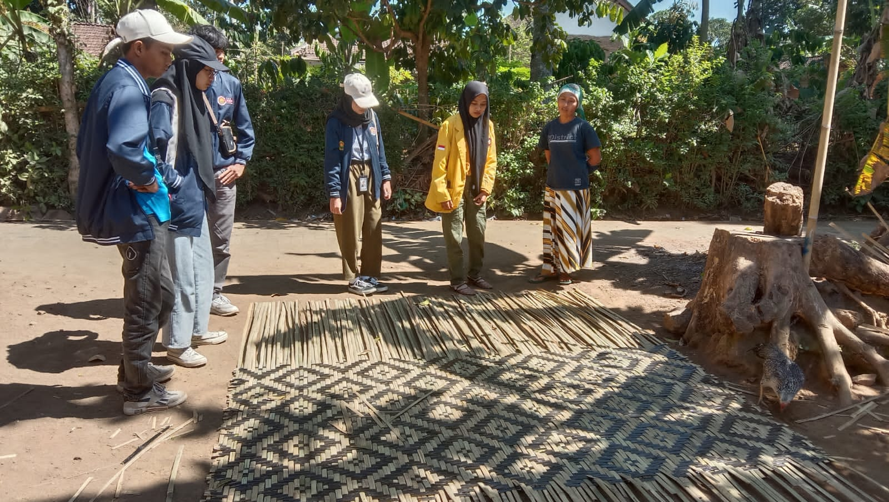
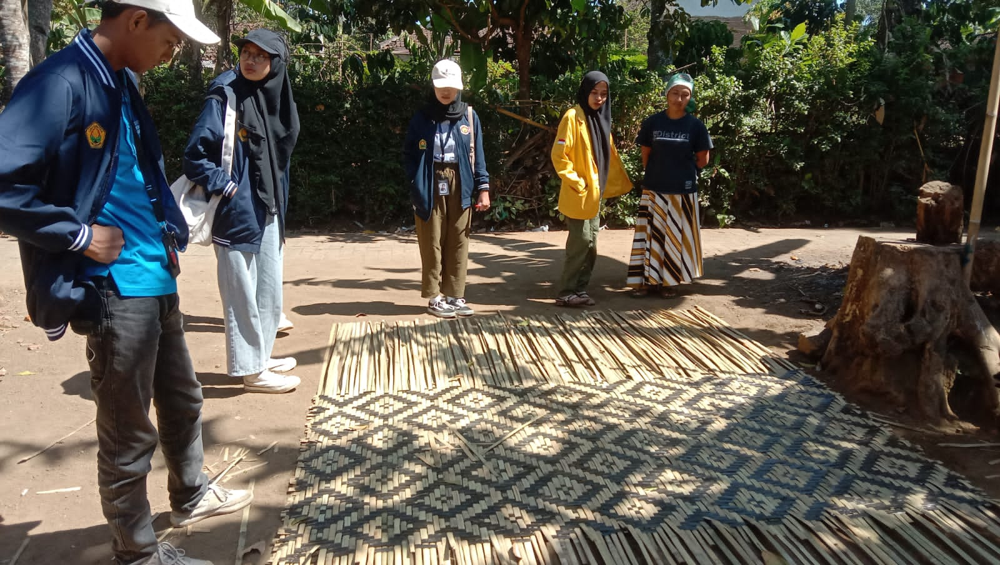
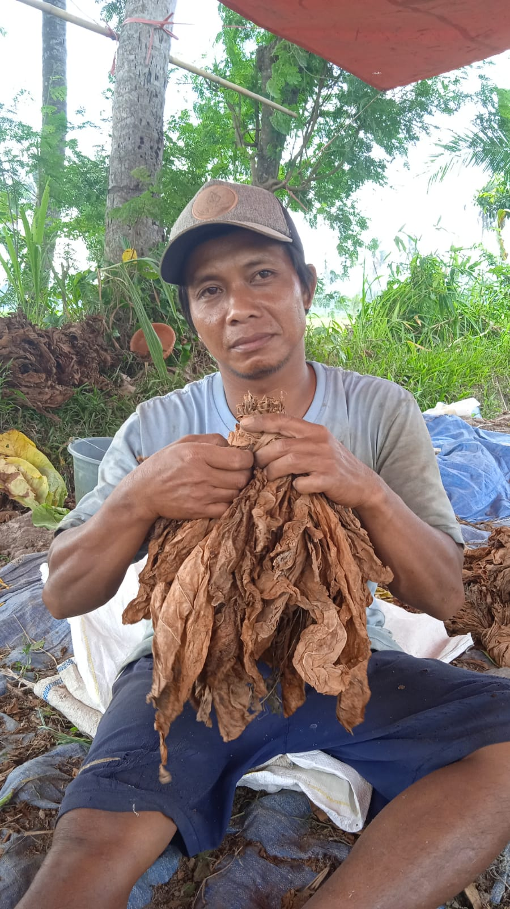
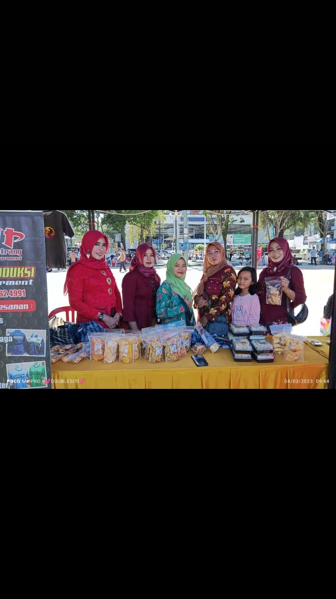
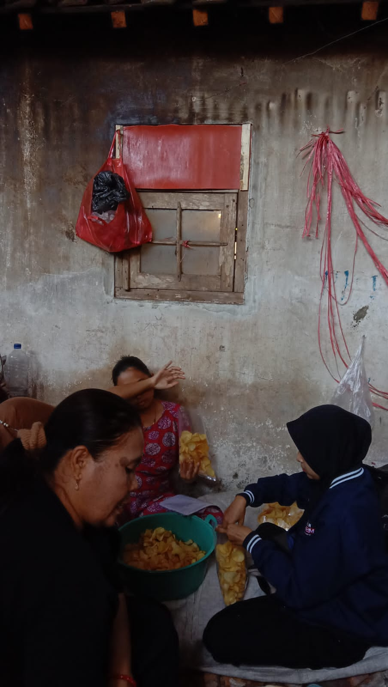

Pertanian tembakau telah menjadi bagian integral dari kehidupan masyarakat di Desa Plerean, Sumberjambe, Jember, Jawa Timur, Indonesia. Sejak zaman kolonial Belanda, tembakau telah menjadi komoditas penting di wilayah ini, tidak hanya sebagai sumber penghidupan tetapi juga sebagai warisan budaya yang berharga.
Hasil pertanian berupa anyaman bambu juga menjadi salah satu UMKM terkuat di Plerean disamping tembakau. Menganyam bambu sudah menjadi tradisi turun menurun warga desa Plerean untuk dijual lagi demi keberlangsungan ekonomi.
Sejarah dan Tradisi Pertanian
Tembakau Desa Plerean terkenal karena tanahnya yang subur dan
iklimnya yang mendukung pertumbuhan tembakau berkualitas tinggi.
Tradisi bertani tembakau telah diwariskan dari generasi ke
generasi. Petani di sini memegang pengetahuan dan keterampilan
yang luar biasa dalam menanam, merawat, dan mengolah tembakau dan
bambu menjadi produk berkualitas tinggi.
Proses Budidaya Tembakau
Proses pertanian tembakau di Desa Plerean dimulai dari pemilihan
bibit yang berkualitas hingga penanaman di lahan yang telah
dipersiapkan secara khusus. Petani dengan teliti merawat tanaman
tembakau, memberikan perawatan yang diperlukan seperti penyiraman,
pemupukan, dan perlindungan terhadap hama dan penyakit. Mereka
juga menjaga tahapan panen dan pengeringan yang khas untuk
menghasilkan tembakau berkualitas tinggi.
Peran Sosial dan Ekonomi
Pertanian tembakau tidak hanya memberikan penghidupan bagi petani
lokal tetapi juga memegang peran sosial yang penting dalam
komunitas Desa Plerean. Banyak dari mereka yang terlibat dalam
seluruh proses pertanian, dari menanam hingga memasarkan produk,
menciptakan keterikatan yang kuat antara masyarakat. Hasil dari
pertanian tembakau juga menjadi salah satu sumber pendapatan utama
bagi banyak keluarga di sini.
Konservasi Budaya dan Lingkungan
Meskipun pertanian tembakau memberikan manfaat ekonomi yang
signifikan, penting untuk memperhatikan dampak lingkungan. Di
tengah upaya untuk melestarikan tradisi pertanian tembakau,
masyarakat Desa Plerean juga semakin sadar akan pentingnya praktik
pertanian yang ramah lingkungan dan berkelanjutan. Beberapa petani
telah beralih ke teknik pertanian organik untuk menjaga
keseimbangan lingkungan sekitar.

UMKM Anyaman Bambu



